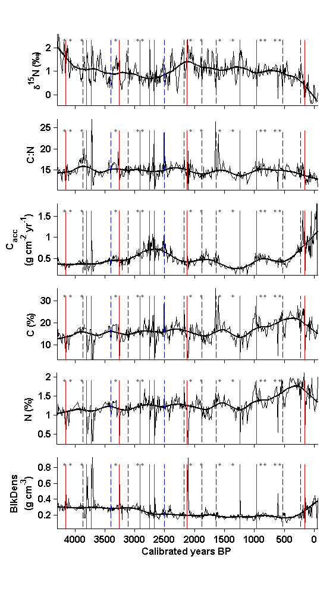
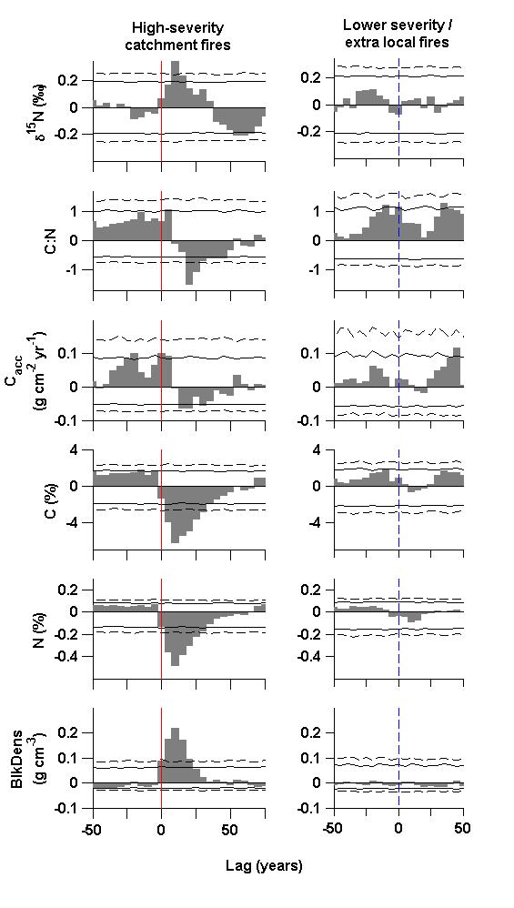

Contents
- Fig_4_5_script.m
- Set working directories: directories where input data are located
- User-set parameters, for SEA.m and plotting
- Load data and create variables
- Define response series
- Interpolate and smooth response series, and calculate residuals
- Manually input event dates
- Create event series equal in length to interpolated series, for SEA.m
- Perform SEA, using function SEA.m and SEA_CI.m
- Figure 4: Time series
- Figure 5: SEA results
Fig_4_5_script.m
Make Figure 4 and Figure 5 from: Dunnette P.V., P.E. Higuera, K.K. McLauchlan, K.M. Derr, C.E. Briles, M.H. Keefe. 2014. Biogeochemical impacts of wildfires over four millennia in a Rocky Mountain subalpine watershed. New Phytologist Accepted.
Figure 4. Time series of sediment biogeochemistry and bulk density. Raw and smoothed (500-year trend; bold line) time series, with vertical solid red lines denoting high-severity catchment fires (n = 11) and vertical dashed blue lines denoting lower severity/extra local fires (n = 9) used in Superposed Epoch Analysis (SEA). Grey dots represent lower severity/extra local fires not included in the SEA (see Materials and Methods). Bulk density is abbreviated by “BlkDens.”
Figure 5. Results of Superposed Epoch Analysis (SEA). Composite residual response values (y axis) before and after high-severity catchment fires (solid red lines, left column) and lower severity/extra local fires (dashed blue lines, right column). The horizontal dashed and solid lines represent Monte Carlo-derived 99% and 95% confidence intervals, respectively. Bulk density is abbreviated by “BlkDens.”
USER CHOICES: yrCutOff: [yr BP] Years of BOTH time series to analyze. params.interpValue: [yr] Years to interpolate response series to. params.smWindow: [yr] Years to smooth response series to, for calculating residuals. params.eventWindow: [yr] Years to analyze, before and after events. x_lim: [yr BP] Years for plotting time series.
FILE REQUIREMENTS: (1) CH10_biogeochemData.csv -- Biogeochemcial data from Chickaree Lk.
DEPENDENCIES: (1) SEA.m -- Matlab function to derive composite records (P.E. Higuera) (2) SEA_CI.m -- Matlab function to derive CIs for composite records (P.E. Higuera) (3) smooth.m -- Matlab function, from the Matlab curvefit toolbox.
CITATION, FILES, AND SELF-AUTHORED FUNCTIONS AVAILABLE FROM FigShare Higuera, P.E. and P.V. Dunnette. 2014. Data, code, and figures from Dunnette et al. 2014. figshare. http://dx.doi.org/10.6084/m9.figshare.988687
Created by: P.E. Higuera Created on: July, 2012 Updated: 12/2012; 3/2013; 6/2013; 7/2013; 8/2013; 9/2013 by P.V. Dunnette Edited: 4/2014 for publication, by P.E. Higuera
University of Idaho, PaleoEcology and Fire Ecology Lab http://www.uidaho.edu/cnr/paleoecologylab phiguera@uidaho.edu
clear all
Set working directories: directories where input data are located
workingDir = 'L:\4_archivedData\Dunnette_et_al_2014\CH10_biogeochem\'; startDir = pwd; % Record starting path
User-set parameters, for SEA.m and plotting
params.interpValue = 5 ; % [yr] Years to interpolate to params.smWindow = 500 ; % [yr] Years to smooth to params.eventWindow = [-50 75] ; % [yr] Years to analyze, before and after params.bin = [round(params.eventWindow(1)/params.interpValue):... round(params.eventWindow(2)/params.interpValue)]; % Bins to use % before and after events. params.nBoot = 1000; % Number of bootstrap resampling, for CIs. yrCutOff = [-57 4300]; % [cal yr BP] Years to use in the analysis x_lim = yrCutOff; % x-axis limits for plotting
Load data and create variables
cd(workingDir) % Change to working directory data = csvread('CH10_biogeochemData.csv',1,4); % Biogeochemical data colName = {'topCm';'botCm';'topAge';'botAge';... ['\delta^1^5N (' char(8240) ')']; 'N (%)';... ['\delta^1^3C (' char(8240) ')']; 'C (%)'; 'C:N';... [' BlkDens ';'(g cm^{-3})'];... [' C_a_c_c ' ; '(g cm^{-2} yr^{-1})']}; % Column headers, % and units cd(startDir) % Change directory back to starting directory.
Define response series
in = [5 9 11 8 6 10]; % Index for response vars., from data response.x = mean(data(:,3:4),2); % [cal yr BP] Mid-sample age of % samples; redefined three lines below in2 = find([(response.x >= yrCutOff(1)) .* (response.x <= yrCutOff(2))]); % Index for all samples within desired age range, defined by yrCutOff response.x = mean(data(in2,3:4),2); % [cal yr BP] Mid-sample age of samples response.y = data(in2,in); % Response time series; units are in % params.responseName. response.n = length(in); % Number of response series. response.name = colName(in); % Name and units for each response var.
Interpolate and smooth response series, and calculate residuals
response.xi = [yrCutOff(1):params.interpValue:max(response.x)]';
% [cal yr BP] Interpolated x values
response.yi = interp1(response.x,response.y,response.xi); % Interpolated
% response series; units as in y
response.ySm = NaN*ones(size(response.yi)); % Space for smoothed
% response series
for i = 1:response.n
response.ySm(:,i) = smooth(response.yi(:,i),... % Lowess smoother,
params.smWindow/params.interpValue,'rlowess'); % robust to outliers.
end
response.residuals = response.yi - response.ySm; % Residuals after removing
% long-term trends from interpolated response variables
Manually input event dates
Criteria for events: 99.9 percentile CHAR pks, 99.9 percentile MS pks. 75 years was the minimum allowable time between consecutive events. Coincident events at 3316 and 4179 cal yr BP were excluded, owing to their proximity to the 3262 and 4156 cal yr BP fire, respectively. Including these events did not significantly alter the results.
HSCF = [161 960 1243 2124 2670 2752 2913 3262 3725 3803 4156];
% [cal yr BP] High-severity catchment fires (n = 11). Based on output
% from events_ID (altered manually for more precise fire yr)
nHSCF = length(HSCF); % sample size for HSCF
LSEF_hiRes = [230 521 1637 1875 2177 2508 3116 3396 3863];
% [cal yr BP] Lower severity, extra local fires (LSEF)with high
% resolution analysis (n = 9)
nLSEF_hiRes = length(LSEF_hiRes); % sample size for LSEF_hiRes
nonSEA_fires = [573 659 823 891 1360 1577 1890 2065 2870 2948 3316 3888,...
4081 4179];
% [cal yr BP] Fires without high-resolution analysis (n = 14). These
% are only for plotting (Fig. 4) and are not used in the SEA (Fig. 5).
Create event series equal in length to interpolated series, for SEA.m
events = zeros(length(response.xi),2); % Space for binary % event series, where 1 = event, and 0 = no event, for use in SEA.m % function. First row = HSFC, second row = LSEF_hiRes for i = 1:nHSCF in = find(abs(response.xi - HSCF(i)) ==... min(abs(response.xi(:,1) - HSCF(i)))); % Find the index value % that minimizes the difference between the year of the event and % the closest matching year in the interpolated response series. % This accommodates event and response series with differing x % values. events(in,1) = 1; % Make this value 1 end for i = 1:nLSEF_hiRes in = find(abs(response.xi - LSEF_hiRes(i)) ==... min(abs(response.xi - LSEF_hiRes(i)))); % Find the index % value that minimizes the difference between the year of the event % and the closest matching year in the interpolated response % series. This accommodates event and response series with differing % x values. events(in,2) = 1; % Make this value 1 end
Perform SEA, using function SEA.m and SEA_CI.m
params.nBoot = 10000; % Number of bootstraps for confidence intervals. params.block = 5; % [samples] Block size for resampling series for % construction of confidence intervals x = response.xi; % Interpolated dates for response series Y = response.residuals; % Perform SEA using residual values [composite] = SEA(x,Y,events,params); % composite: Mean value across all events, for % each bin (i) before and after events, for each response % variable (j), and for each event series (k). [composite_CI] = SEA_CI(x,Y,events,params); % composite_CI: percentile values for each bin before and after % events (i), each response series (j), each event series (k), and each % percentile level (l). Percentiles are as follows: 0.5 99.5, % corresponding to 99% CI, 2.5 and 97.5, corresponding to 95 CI, and % 5 and 95, corresponding to 90% CI>
Figure 4: Time series
fs = 10; % Font size figure(2); clf set(gcf,'color','w','units','centimeters','position',[15 0 12.35 23.35]); for i = 1:response.n subplot(response.n,1,i) plot(response.x,response.y(:,i),'k') % Plot response time series. axis tight y_lim = get(gca,'ylim'); if i == 3 % If C_acc, change y-lim y_lim = [y_lim(1) 1.8]; ylim(y_lim) end hold on plot(response.xi,response.ySm(:,i),'k','linewidth',1.5) % Plot smoothed % response time series. for k = 1:length(HSCF) % Plot HSCF as lines plot([HSCF(k) HSCF(k)],[y_lim(1) 0.90*y_lim(2)],'-r','linewidth',1) end for k = 1:length(LSEF_hiRes) % Plot LSEF as dashed lines plot([LSEF_hiRes(k) LSEF_hiRes(k)],[y_lim(1) 0.90*y_lim(2)],... '--b','linewidth',1) end plot(nonSEA_fires,0.90.*y_lim(2),'.','color',[0.5 0.5 0.5]) % Plot % fires not used in SEA as dots. box off if i < response.n set(gca,'xticklabel','') else xlabel('Calibrated years BP','FontSize',fs,'FontWeight','Bold') end set(gca,'FontSize',fs,'FontWeight','b','xdir','rev','tickdir','out',... 'xtick',[0:500:4000],'ticklength',[0.012 0.012],'xlim',x_lim) ylabel(response.name(i)) % Position the plot: pos = get(gca,'position'); pos(4) = 0.12; pos(1) = 0.17; set(gca,'position',pos) end
Figure 5: SEA results
figure(3); clf set(gcf,'color','w','units','centimeters','position',[25 0 12.35 23.35]); y_lim_bc = [-0.4 0.35; -1.7 1.7; -0.1 0.2; -7 4; -0.6 0.3; -0.1 0.3]; y_tick_bc = [-999 -0.2 0 0.2; -999 -1 0 1; -999 -0.1 0 0.1; -999 -4 0 4;... -0.4 -0.2 0 0.2; -0.1 0 0.1 0.2]; plotIn = [1:2:response.n*2]; for i = 1:response.n % Lower severity / extra local fires subplot(response.n,2,plotIn(i)+1) j = 2; set(gca,'tickdir','out'); box off x = params.interpValue .* params.bin; y = composite(:,i,j); hold on h4 = bar(x,y,1); set(h4,'facecolor',[0.5 0.5 0.5],'edgecolor',[0.5 0.5 0.5]) plot(x,squeeze(composite_CI(:,i,j,[1:2])),'--k') plot(x,squeeze(composite_CI(:,i,j,[3:4])),'-k') axis tight y_lim = get(gca,'ylim'); plot([0 0],y_lim_bc(i,:),'--b','linewidth',1) set(gca,'ylim',y_lim_bc(i,:),'ytick',y_tick_bc(i,:),... 'FontSize',fs,'FontWeight','b'); xlim([-50 50]); set(gca,'xtick',[-50:25:50]); set(gca,'ticklength',[0.06 0.06]); if i == 1 title({'Lower severity /' 'extra local fires'},... 'FontSize',fs,'FontWeight','bold') end pos=get(gca,'position'); pos(4) = 0.11; pos(3) = 0.3347*0.75; pos(1) = 0.65; set(gca,'position',pos) if i < response.n set(gca,'xticklabel','') else set(gca,'xticklabel',{'-50','','0','','50',}); end % High severity catchment fires subplot(response.n,2,plotIn(i)) j = 1; set(gca,'tickdir','out'); box off x = params.interpValue .* params.bin; y = composite(:,i,j); hold on h4 = bar(x,y,1); set(h4,'facecolor',[0.5 0.5 0.5],'edgecolor',[0.5 0.5 0.5]) plot(x,squeeze(composite_CI(:,i,j,[1:2])),'--k') plot(x,squeeze(composite_CI(:,i,j,[3:4])),'-k') axis tight box off set(gca,'ylim',y_lim_bc(i,:),'ytick',y_tick_bc(i,:),... 'xtick',[-50:25:75],'tickdir','out',... 'ticklength',[0.06 0.06],'FontSize',fs,'FontWeight','b'); ylabel(response.name(i)) pos = get(gca,'position'); pos(4) = 0.11; pos(1) = 0.18; set(gca,'position',pos) if i == 1 title ({'High-severity' 'catchment fires'},'fontweight',... 'bold','FontSize',fs) end if i < response.n set(gca,'xticklabel','') else xlabel({' ' ' Lag (years)'},... 'fontsize',fs,'fontweight','b') set(gca,'xticklabel',{'-50','','0','','50',''}); end set(gca,'xlim',[-50 75]) plot([0 0],y_lim_bc(i,:),'r','linewidth',1) end